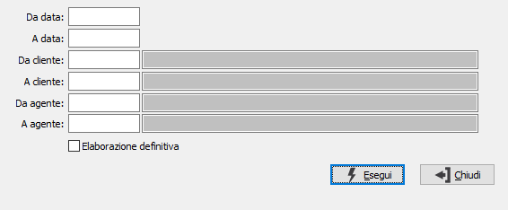

Annullamento registrazioni incassi
La procedura consente di annullare la registrazione degli incassi, cancellando i movimenti relativi.

DA DATA: data movimento da cui si vuole iniziare la selezione. Confermando a vuoto, la selezione inizia dalla prima data valida.
A DATA: data movimento con cui si vuole concludere la selezione. Confermando a vuoto, la selezione termina con l'ultima data valida.
DA CLIENTE: codice del cliente, presente in anagrafica, da cui si vuole iniziare l'elaborazione. Confermando a vuoto, l'elaborazione inizia dal primo codice valido. Sul campo sono attive le funzioni di ricerca (F9).
A CLIENTE: codice del cliente, presente in anagrafica, con cui si vuole terminare l'elaborazione. Confermando a vuoto, l'elaborazione termina con l'ultimo codice valido. Sul campo sono attive le funzioni di ricerca (F9).
DA AGENTE: codice dell'agente, da cui si vuole iniziare l'elaborazione. Confermando a vuoto, l'elaborazione inizia dal primo codice valido. Sul campo sono attive le funzioni di ricerca (F9).
A AGENTE: codice dell'agente, con cui si vuole terminare l'elaborazione. Confermando a vuoto, l'elaborazione termina con l'ultimo codice valido. Sul campo sono attive le funzioni di ricerca (F9).
ELABORAZIONE DEFINITIVA: consente di effettuare l'effettiva eliminazione dei movimenti (casella con segno di spunta) oppure una simulazione (casella vuota).
La pressione del pulsante Esegui dà inizio all'elaborazione, al termine viene eseguita una stampa del risultato che riporta i movimenti selezionati ed eventualmente eliminati.